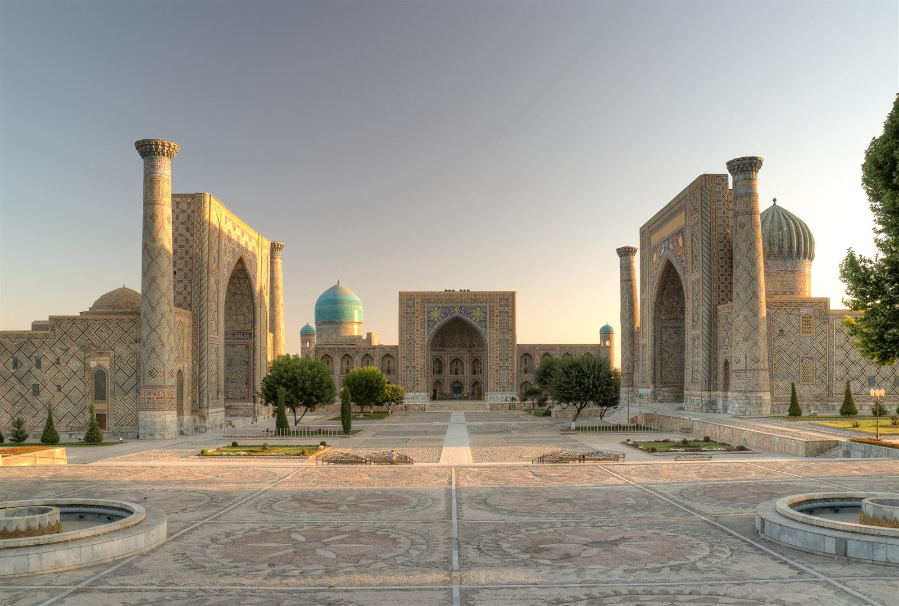
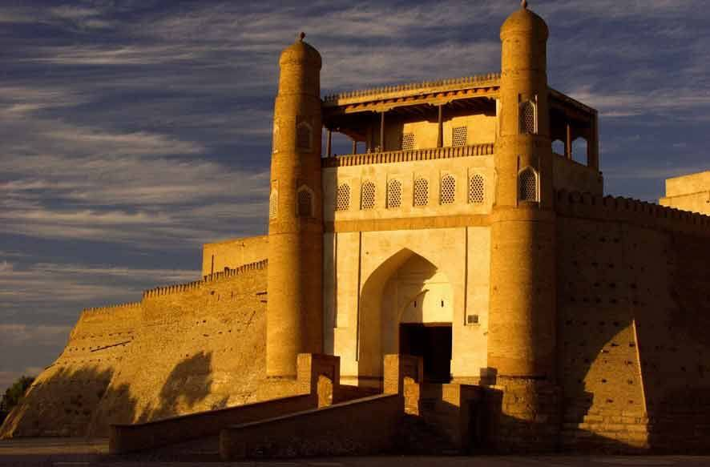
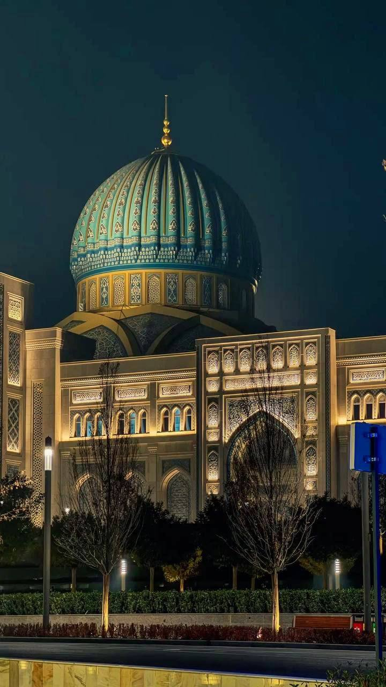
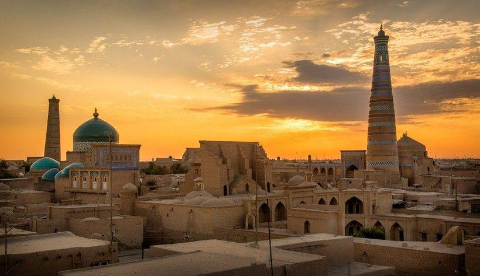

Why Visit Uzbekistan? 5 Reasons to Discover This Hidden Gem of Central Asia
Discover 5 reasons to visit Uzbekistan, from ancient Silk Road cities and authentic culture to delicious food, beautiful landscapes and affordable travel.
Everything you need to plan your trip: the cities worth your time, practical tips, local etiquette and ready-made routes.
Latest From the Guide

Discover 5 reasons to visit Uzbekistan, from ancient Silk Road cities and authentic culture to delicious food, beautiful landscapes and affordable travel.
Where to Go

One of the oldest cities in Central Asia and the grand capital of Amir Temur's empire. Turquoise domes, vast madrasas and lively bazaars make it the most spectacular stop on the route.
Must-see: Registan Square, Gur-Emir Mausoleum, Shah-i-Zinda, Bibi-Khanym Mosque, Siab Bazaar.

A compact old town where history is still part of daily life. Wander between trading domes, medieval madrasas and tea houses around the Lyabi-Hauz pool, easily on foot.
Must-see: Ark Fortress, Poi Kalyan complex, Lyabi-Hauz, trading domes, Chor-Minor.

A modern, green capital that blends Soviet-era architecture with new landmarks and old-town neighbourhoods. Most visitors arrive here, so it is a good place for a first day or a final evening.
Must-see: Chorsu Bazaar, Hast Imam Complex, Independence Square, Amir Temur Square, the metro.

The best-preserved walled city in Uzbekistan. Inside the clay walls of Itchan Kala you will find carved wooden columns, blue-tiled minarets and a stage-set atmosphere, especially at sunrise and sunset.
Must-see: Itchan Kala, Kalta Minor, Islam Khoja Minaret, Tash-Hovli Palace, Juma Mosque.
Before You Go
Rules and prices change, so double-check official sources close to your travel date — or ask us.
Citizens of many countries can enter visa-free for short stays or apply for a simple online e-visa. Requirements depend on your nationality, so check the official e-visa portal or the nearest consulate before booking, and make sure your passport is valid well beyond your stay.
The local currency is the Uzbek soum (UZS). Cards work in hotels, larger restaurants and shops, but cash is still needed at bazaars, small cafés and for tips. Exchange money at banks or official exchange points, and bring clean, undamaged foreign banknotes.
Spring (March–May) and autumn (September–November) bring the mildest weather and are ideal for sightseeing. Summer is very hot, especially in Bukhara and Khiva, while winter is cold, quiet and much less crowded.
The high-speed Afrosiyob train links Tashkent, Samarkand and Bukhara quickly and comfortably. The slower Sharq train is a cheaper alternative on the same route. Book seats in advance in high season; for Shakhrisabz, Nurata or Khiva a private car or a domestic flight is often easier.
Local SIM cards and eSIMs are easy to get at the airport or in operator shops (a passport is needed to register a physical SIM) and mobile data is affordable. Wi-Fi is common in hotels and cafés, and WhatsApp and Telegram work normally.
Uzbek is the official language and Russian is widely understood. English is common in hotels and at major sights, but less so elsewhere. A few Uzbek words, like “rahmat” (thank you), are always appreciated.
Respect the Local Way
Cover shoulders and knees when visiting mosques, mausoleums and other religious sites. Women may be asked to cover their hair, so carry a light scarf. Remove your shoes where you see others doing so.
Uzbeks are warm and hospitable. A handshake with a hand placed over the heart is a common greeting, and men usually do not initiate a handshake with women. Always greet people first and ask before photographing them.
If you are invited into a home, take your shoes off at the door and accept at least a little tea and food. Bread is treated with respect: never place it upside down or throw it away, and it is polite to break it by hand.
Tips are appreciated but not obligatory. Restaurants often add a service charge to the bill, and if they do not, leaving a small percentage is a kind gesture. It is also customary to tip guides and drivers for good service.
Haggling is part of the fun at bazaars and souvenir stalls. Start well below the asking price, stay friendly and smile, and be ready to walk away. Prices in shops with fixed price tags, supermarkets and restaurants are not negotiable.
Photography is welcome at most sights, though some museums and mausoleums charge a small fee for a camera. Avoid photographing government buildings, military sites, airports and railway stations, and never take close-ups of people without asking.
Plan Your Days
Sample itineraries to start from. We adjust every route to your season, pace and interests.
Day 1. Arrive in Tashkent. Chorsu Bazaar, Hast Imam Complex and an evening walk in the city centre.
Day 2. High-speed train to Samarkand. Registan Square and Gur-Emir Mausoleum, then the illuminated sights in the evening.
Day 3. Shah-i-Zinda, Bibi-Khanym Mosque, Siab Bazaar and the Ulugbek Observatory.
Day 4. Train to Bukhara. Old city on foot: Lyabi-Hauz, trading domes and the Poi Kalyan complex.
Day 5. Ark Fortress and last souvenirs, then return to Tashkent and fly home.
Day 1. Arrive in Tashkent and see the main sights of the capital.
Days 2–3. Samarkand: Registan, Gur-Emir, Shah-i-Zinda and Bibi-Khanym, plus an evening walk when the monuments are lit.
Day 4. Day trip over the mountains to Shakhrisabz, the birthplace of Amir Temur, then on to Bukhara.
Day 5. Bukhara old city and its surrounding palaces and shrines.
Day 6. Travel to Khiva and explore Itchan Kala in the afternoon light.
Day 7. Sunrise on the walls, final sights and departure.
Days 1–2. Tashkent: old and new city, markets and museums, with time to rest after your flight.
Days 3–4. Samarkand at an unhurried pace, including the Konigil paper village and the Imam al-Bukhari complex.
Day 5. Shakhrisabz and the Tahtakaracha mountain pass.
Day 6. Nurata and a night in a yurt camp under the stars.
Days 7–8. Bukhara: the old city, Chor-Minor and the emir's summer palace.
Days 9–10. Khiva and Itchan Kala, with a slow morning on the walls.
Day 11+. Return to Tashkent, or extend with the Fergana Valley, the Tashkent mountains or a cross-border day trip to the Seven Lakes of Tajikistan.
We Do the Planning
Tell us your dates and interests — we'll arrange the guides, transport, hotels and tickets into one smooth trip.